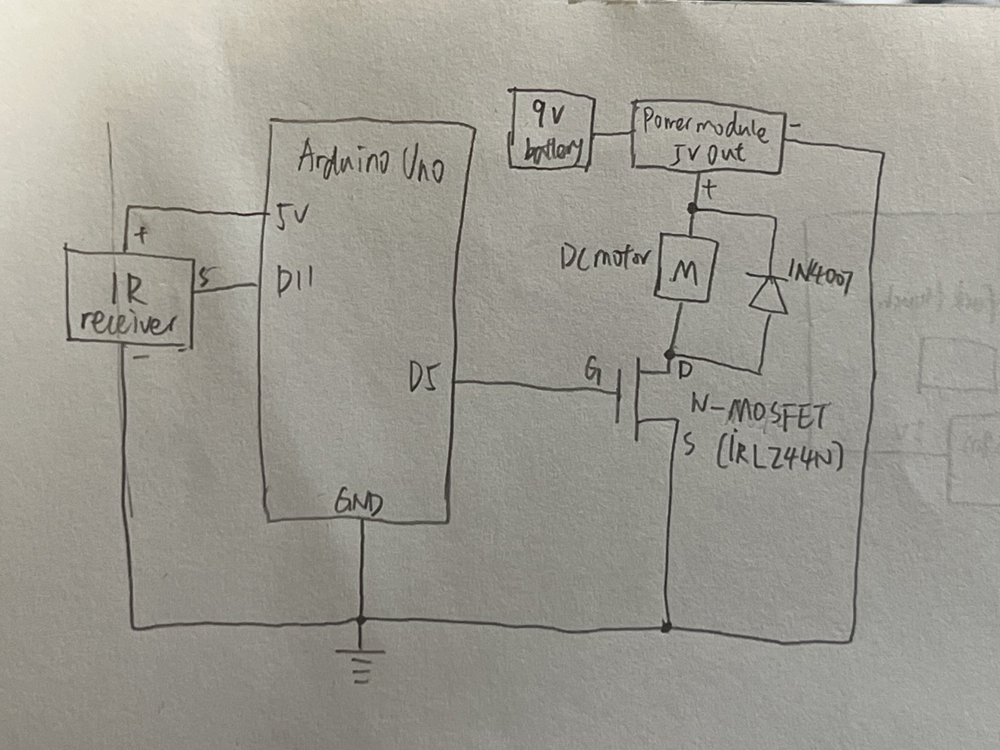
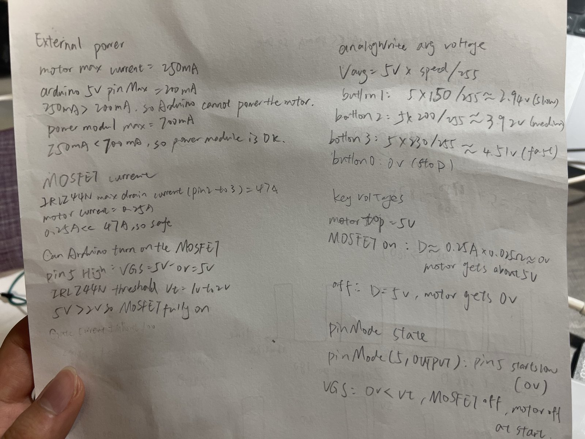
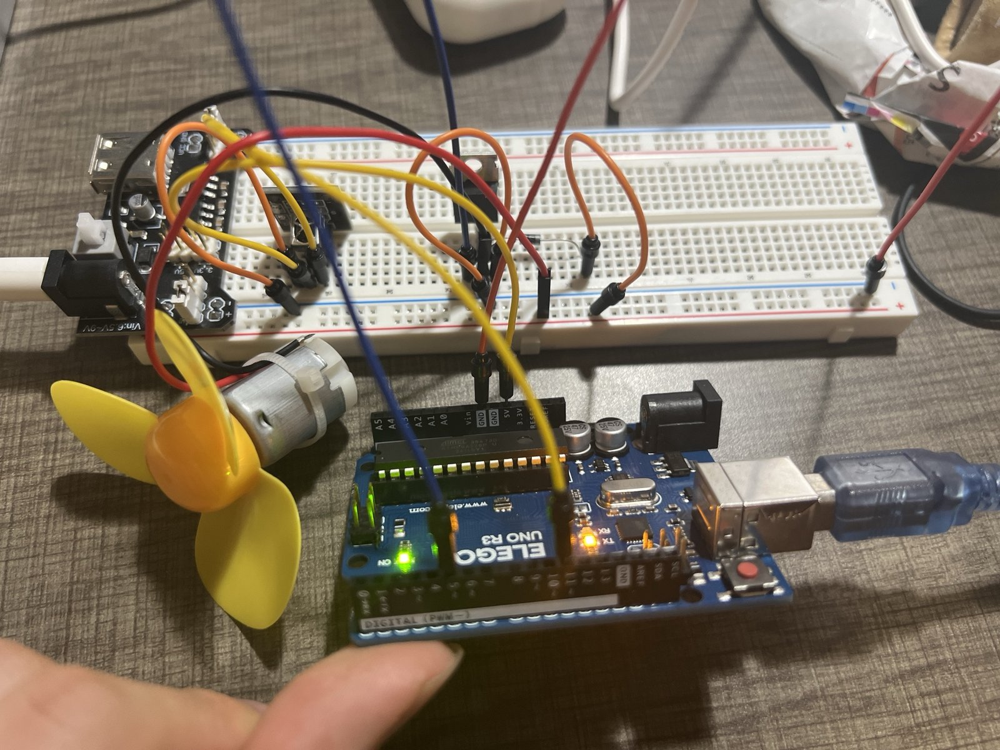
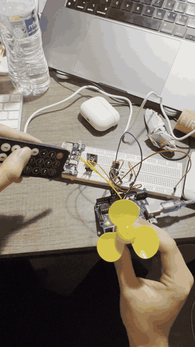
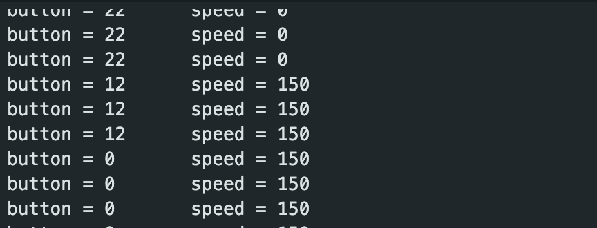
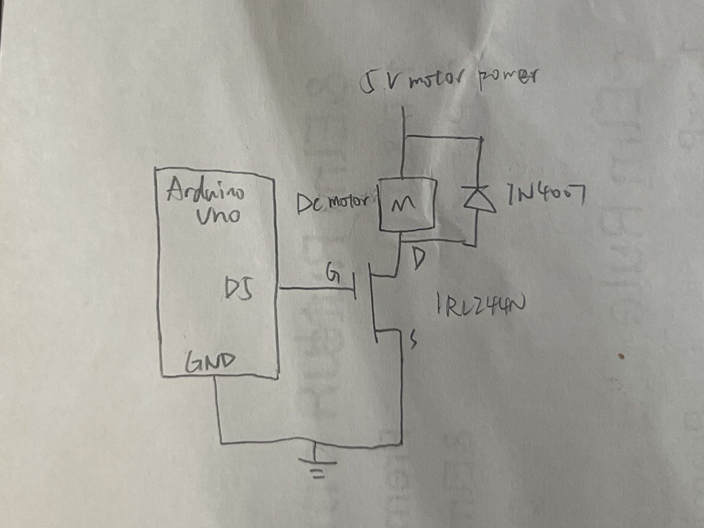
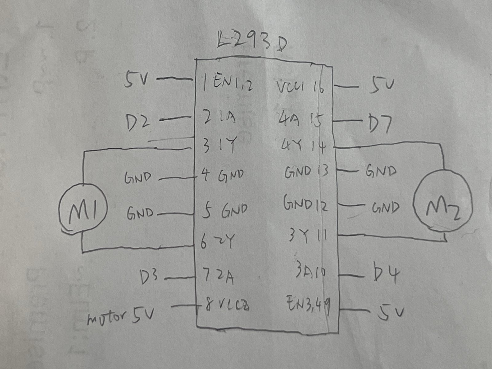

For this smart home prototype, I made a fan that I can control with a TV remote. Button 1, 2 and 3 set the fan to slow, medium and fast, and button 0 turns it off. The remote is read with the IRremote library. The motor gets its power from a separate power module, and the Arduino switches it with an N-MOSFET using analogWrite().



Based on the IRremote library examples and the motor speed example from lecture 10.
// remote library
#include <IRremote.hpp>
// MOSFET gate pin
int motorPin = 5;
// IR receiver pin
int irPin = 11;
// motor speed, 0 to 255
int speed = 0;
// runs once
void setup() {
// start serial
Serial.begin(9600);
// start the IR receiver
IrReceiver.begin(irPin);
// pin 5 is an output, it starts LOW so the motor is off
pinMode(motorPin, OUTPUT);
}
// runs over and over
void loop() {
// a button was pressed
if (IrReceiver.decode()) {
// read the button code
int button = IrReceiver.decodedIRData.command;
// button 0
if (button == 22) {
// stop
speed = 0;
}
// button 1
if (button == 12) {
// slow
speed = 150;
}
// button 2
if (button == 24) {
// medium
speed = 200;
}
// button 3
if (button == 94) {
// fast
speed = 230;
}
// print label
Serial.print("button = ");
// print button code
Serial.print(button);
// print label
Serial.print("\t speed = ");
// print speed
Serial.println(speed);
// get ready for the next button
IrReceiver.resume();
}
// set the motor speed
analogWrite(motorPin, speed);
}

My MOSFET is an IRLZ44N. Pin 2 is the drain and pin 3 is the source. From the datasheet, the max continuous drain current is 47A (at 25 degrees C, VGS = 10v), and the max pulsed current is 160A.
The right half of my schematic above is this circuit: D5 drives the gate of an N-MOSFET, the motor sits between the 5v supply and the drain, and the diode goes across the motor with the stripe on the 5v side. Parts I could use:


// both forward
D2 HIGH, D3 LOW // motor 1 forward
D4 HIGH, D7 LOW // motor 2 forward
wait 1 second
// both back
D2 LOW, D3 HIGH // motor 1 back
D4 LOW, D7 HIGH // motor 2 back
wait 1 second
// motor 1 forward, motor 2 back
D2 HIGH, D3 LOW
D4 LOW, D7 HIGH
wait 1 second
// motor 1 back, motor 2 forward
D2 LOW, D3 HIGH
D4 HIGH, D7 LOW
wait 1 secondYes, I used Claude. It helped me pick a design that uses parts from class, draw reference diagrams for my schematics and wiring, and write the code and calculations. When the remote stopped working while the motor was running, it helped me figure out that motor noise was the problem and I fixed it by moving the IR ground to its own Arduino GND pin. It also helped me with building this web page.
Reflection: it was most helpful for debugging, because it gave me a starting point.